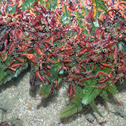
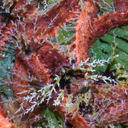
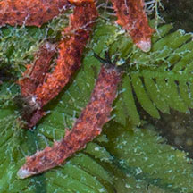
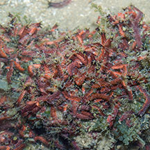
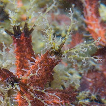
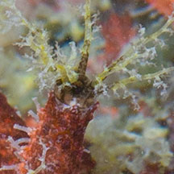
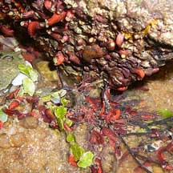
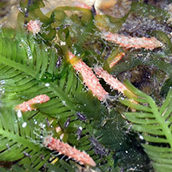

|
|
| sea cucumbers text index | photo index |
| Phylum Echinodermata > Class Holothuroidea |
| Tiny
red sea cucumber awating identification* Family Cucumariidae updated Apr 2020 Where seen? This tiny sea cucumbers are sometimes seen on our Northern shores. In groups of many individuals, densely carpeting a few square metres. They settle on seaweeds and coral rubble areas, clinging to sponges, seaweeds, even other larger sea cucumbers and encrusting organisms covering the coral rubble. Features: About 1cm or shorter. Often mistaken for worms, each has all the features that bigger sea cucumbers have. Body bright red, squarish or quadrangular in cross-section, backside tip translucent white. Tiny tube feet, very long, white. Feeding tentacles dark at the base becoming yellowish at tips, branched tips translucent white. |
 Chek Jawa, Jun 05 |
 |
 |
 Chek Jawa, May 05 |
 |
 |
*Species are difficult to positively identify without close examination.
On this website, they are grouped by external features for convenience of display
| Tiny red sea cucumbers on Singapore shores |
On wildsingapore
flickr
|
| Other sightings on Singapore shores |
 East Coast, Dec 08 Photo shared by Loh Kok Sheng on his blog. |
 Pulau Sekudu, Jul 19 Photo shared by Loh Kok Sheng on facebook. |
References
|